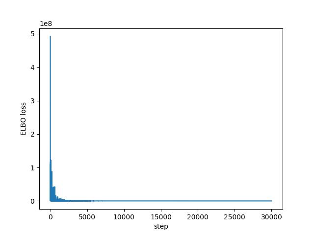
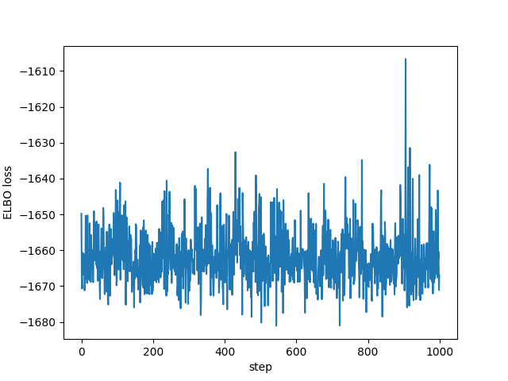
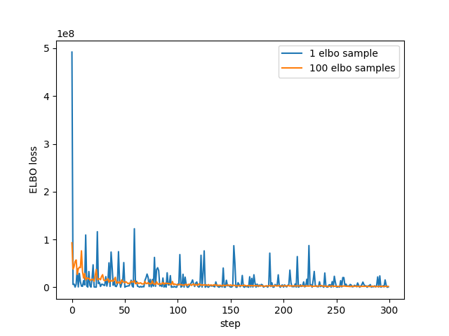

In going NUTS with pyro and pystan I mentioned that I would like to try variational inference algorithms in pyro, so here is that attempt. A disclaimer: I am not very familiar with pyro or variational inference.
I'm using the same simple data and model from the NUTS post, and use the mean-field Gaussian variational family to approximate the posterior. This can be done easily using the AutoDiagonalNormal class to specify the "guide".
I'm not sure of all details of what pyro is doing behind the scenes, but you can see that the ELBO classes use sampling to approximate the ELBO value/gradient. This sampling is required to calculate expectations with respect to the variational distribution, and I was shocked to hear that the default of 1 sample is usually enough for this algorithm!
Anyway, using Adam to minimise the ELBO loss (the -ve ELBO I guess?) looks something like this:
import torch import pyro import pyro.optim import pyro.infer import pyro.distributions as dist import pyro.contrib.autoguide as autoguide import numpy as np import time as tm pyro.set_rng_seed(42) N = 2500 P = 8 LEARNING_RATE = 1e-2 NUM_STEPS = 30000 NUM_SAMPLES = 3000 alpha_true = dist.Normal(42.0, 10.0).sample() beta_true = dist.Normal(torch.zeros(P), 10.0).sample() sigma_true = dist.Exponential(1.0).sample() eps = dist.Normal(0.0, sigma_true).sample([N]) x = torch.randn(N, P) y = alpha_true + x @ beta_true + eps def model(x, y): alpha = pyro.sample("alpha", dist.Normal(0.0, 100.0)) beta = pyro.sample("beta", dist.Normal(torch.zeros(P), 10.0)) sigma = pyro.sample("sigma", dist.HalfNormal(10.0)) mu = alpha + x @ beta return pyro.sample("y", dist.Normal(mu, sigma), obs=y) guide = autoguide.AutoDiagonalNormal(model) optimiser = pyro.optim.Adam({"lr": LEARNING_RATE}) loss = pyro.infer.JitTraceGraph_ELBO() svi = pyro.infer.SVI(model, guide, optimiser, loss, num_samples=NUM_SAMPLES) losses = np.empty(NUM_STEPS) pyro.clear_param_store() start = tm.time() for step in range(NUM_STEPS): losses[step] = svi.step(x, y) if step % 5000 == 0: print(f"step: {step:>5}, ELBO loss: {losses[step]:.2f}") print(f"\nfinished in {tm.time() - start:.2f} seconds")
step: 0, ELBO loss: 491999392.00 step: 5000, ELBO loss: 67168.64 step: 10000, ELBO loss: 26577.41 step: 15000, ELBO loss: 25676.19 step: 20000, ELBO loss: -1559.03 step: 25000, ELBO loss: -1665.76 finished in 48.57 seconds
I had no idea what values to use for the learning rate or the number of steps, but it does appear to converge as we can see in the following plots of all the ELBO estimates and the last 1,000 respectively:
import matplotlib.pyplot as plt plt.plot(losses) plt.xlabel("step") plt.ylabel("ELBO loss") plt.savefig("../img/pyro-elbo.png") plt.close()

plt.plot(losses[-1000:]) plt.xlabel("step") plt.ylabel("ELBO loss") plt.savefig("../img/pyro-elbo-last-1000.png") plt.close()

The variational parameters (the means and the standard deviations of the factored Gaussians) end up getting stored in the "param store" and look this this:
for key, value in pyro.get_param_store().items(): print(f"{key}:\n{value}\n")
auto_loc:
tensor([ 45.3708, 1.2963, 2.3403, 2.3069, -11.2269, -1.8563, 22.0911,
-6.3839, 4.6192, -1.7879], requires_grad=True)
auto_scale:
tensor([0.0038, 0.0032, 0.0038, 0.0038, 0.0033, 0.0034, 0.0031, 0.0032, 0.0032,
0.0145], grad_fn=<AddBackward0>)
So for example our posterior estimate of the alpha parameter is \(\mathcal{N}(45.37,
0.0038^2)\) (I believe the parameters appear in the order they were defined in the model
code). This is fine for all of the parameters less sigma which has a half-normal prior
to ensure it is positive. As far as I can tell pyro automatically takes care of this for
us by actually placing the variational approximation over log(sigma). This means that
our posterior approximation of sigma is actually log-normal.
You don't really need to do this for the model used here, but to see the approximated
posterior in the same way as we did with NUTS, we can take samples from the variational
distribution and transform them accordingly (in this case only exponentiating the
log(sigma) samples):
import arviz as az posterior = svi.run(x, y) support = posterior.marginal(["alpha", "beta", "sigma"]).support() data_dict = {k: np.expand_dims(v.detach().numpy(), 0) for k, v in support.items()} data = az.dict_to_dataset(data_dict) summary = az.summary(data, round_to=4)[["mean", "sd"]] print(summary)
| mean | sd | |
|---|---|---|
| alpha | 45.3709 | 0.0038 |
| beta[0] | 1.2963 | 0.0032 |
| beta[1] | 2.3403 | 0.0038 |
| beta[2] | 2.3068 | 0.0038 |
| beta[3] | -11.227 | 0.0033 |
| beta[4] | -1.8562 | 0.0034 |
| beta[5] | 22.0912 | 0.0031 |
| beta[6] | -6.3839 | 0.0031 |
| beta[7] | 4.6194 | 0.0032 |
| sigma | 0.1673 | 0.0024 |
Which we can compare to the true parameters:
import pandas as pd true_values = torch.cat([alpha_true.reshape(-1), beta_true, sigma_true.reshape(-1)]) true_names = ["alpha", *[f"beta[{i}]" for i in range(P)], "sigma"] true_dict = {"names": true_names, "values": true_values} true_data = pd.DataFrame(true_dict).set_index("names") print(true_data.round(4))
| names | values |
|---|---|
| alpha | 45.3669 |
| beta[0] | 1.2881 |
| beta[1] | 2.3446 |
| beta[2] | 2.3033 |
| beta[3] | -11.2286 |
| beta[4] | -1.8633 |
| beta[5] | 22.082 |
| beta[6] | -6.38 |
| beta[7] | 4.6166 |
| sigma | 0.1709 |
Looks like it all works!
Finally, to check I actually understand at least some of this, I re-ran using a larger number of samples in the ELBO calculation. I had to drastically reduce the number of steps as the extra samples seems to have a big affect on the run time:
ELBO_SAMPLES = 100 NUM_STEPS = 300 guide = autoguide.AutoDiagonalNormal(model) optimiser = pyro.optim.Adam({"lr": LEARNING_RATE}) loss = pyro.infer.JitTraceGraph_ELBO(ELBO_SAMPLES) svi = pyro.infer.SVI(model, guide, optimiser, loss) losses2 = np.empty(NUM_STEPS) pyro.clear_param_store() start = tm.time() for step in range(NUM_STEPS): losses2[step] = svi.step(x, y) if step % 50 == 0: print(f"step: {step:>5}, ELBO loss: {losses[step]:.2f}") print(f"\nfinished in {tm.time() - start:.2f} seconds")
step: 0, ELBO loss: 491999392.00 step: 50, ELBO loss: 194320.78 step: 100, ELBO loss: 6862703.00 step: 150, ELBO loss: 617908.38 step: 200, ELBO loss: 456152.75 step: 250, ELBO loss: 741880.94 finished in 52.14 seconds
plt.plot(losses[:NUM_STEPS], label="1 elbo sample") plt.plot(losses2, label = f"{ELBO_SAMPLES} elbo samples") plt.xlabel("step") plt.ylabel("ELBO loss") plt.legend() plt.savefig("../img/pyro-elbo-samples-last-1000.png") plt.close()

So looks as we'd expect - with more samples the estimate has less noise.